Forecasting the future has been one of humankind’s favorite pastimes.
We’re usually pretty bad at it, but there’s always been a Cassandra or a
Delphic oracle, a Sibyl or a Nostradamus willing to make the attempt.
Project EDEN will be that oracle, and we'll build this
vision using the latest technology and advance material research. No
longer a mere dream, humans will finally be living in harmony with
nature and stop our abuse of the planet.
Combining innovative urban planning, Green Energy, and advanced
robotics, we aim to build the perfect Ecocity. Leaving no waste, where
humans can live to their full potential, and hunger and work is a far
distant nightmare. The garden of EDEN.
Creating our own Ecocity
Cities
are known to be the most innovative and complex creations of human
beings. They have existed in the past and will continue to exist in the
future, showcasing human growth and development. Cities are economic and
social systems, that are dominating the global canvas in terms of
concentration of population.
By making sure our city will have space for nature, we ensure air
quality to be optimal. While ensuring room for recreation and a stress
free enviroment. Taking advantage of the natural lay of land and the
river, we build our city organicly, weaving with nature rather than
force it to our whims.
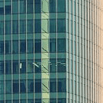
Path
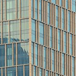
edges
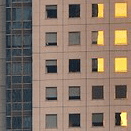
districts
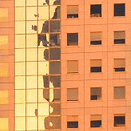
landmarks
Design concept
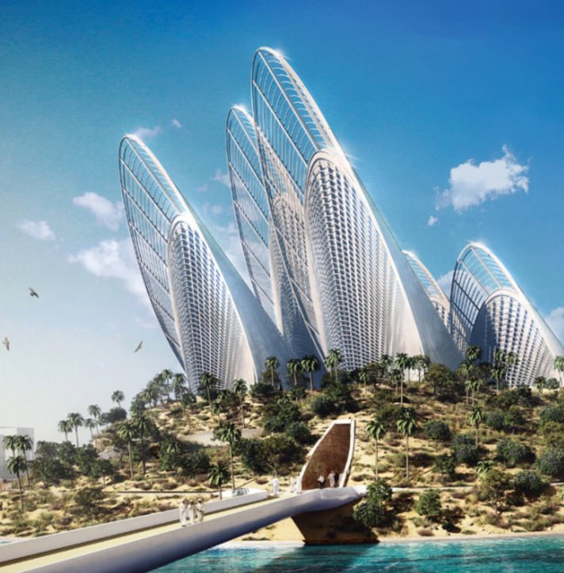
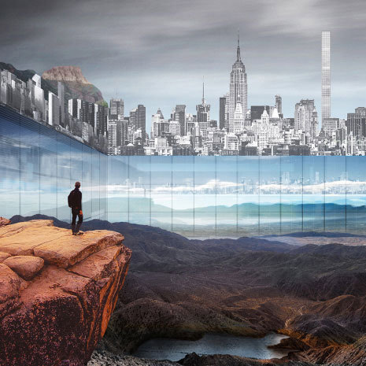
Ecology
Intelligent
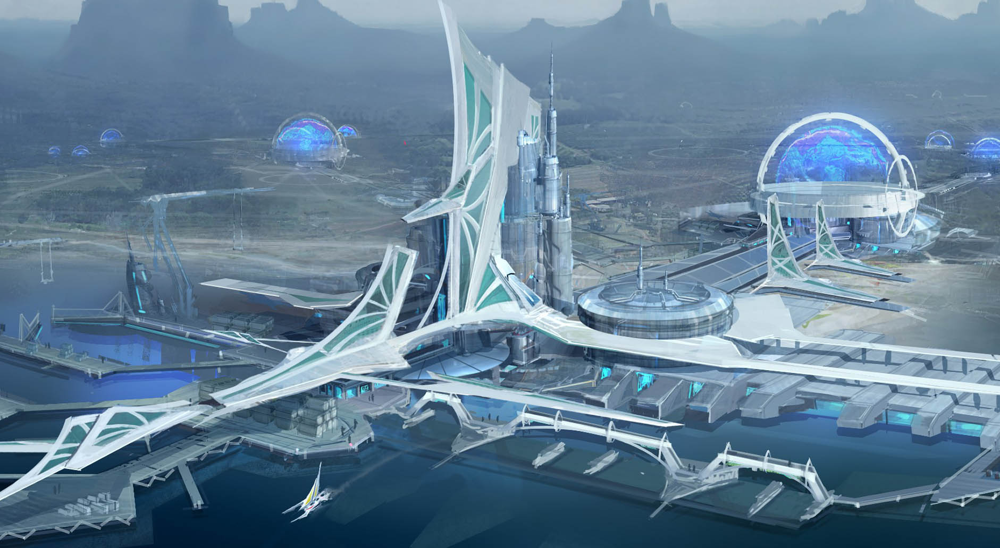
Diverse
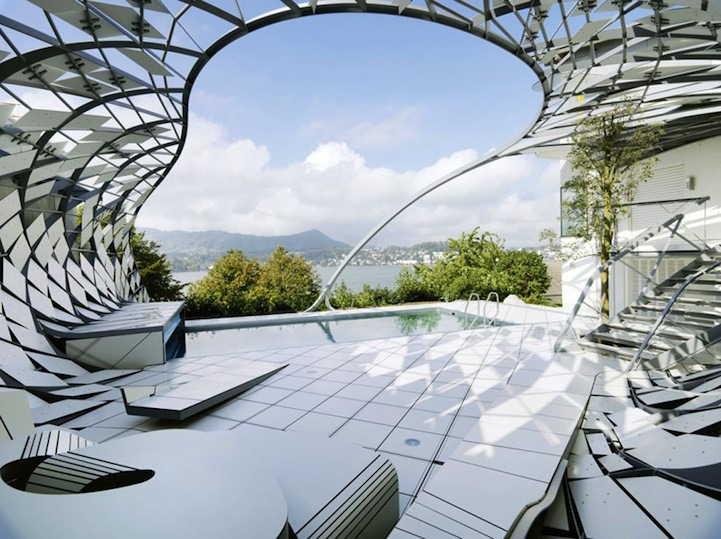
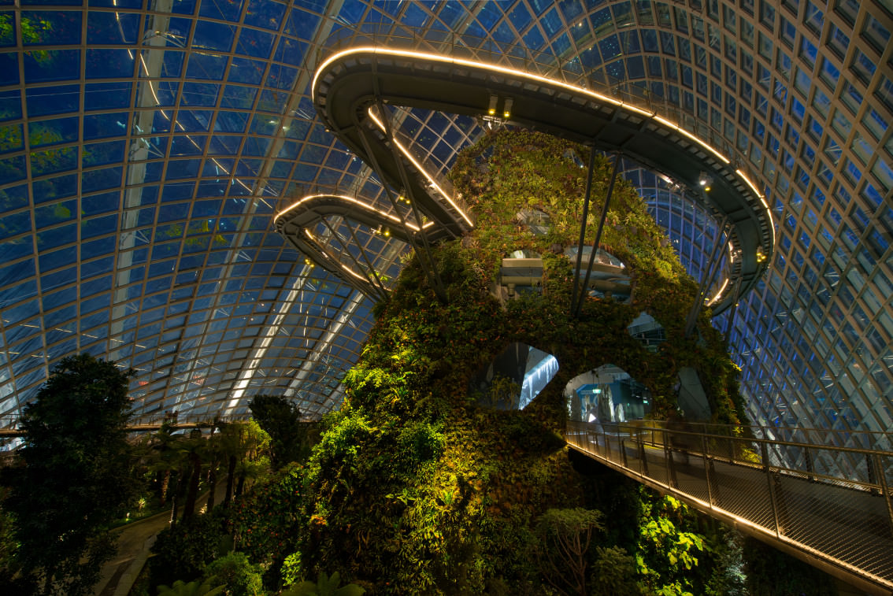
Green
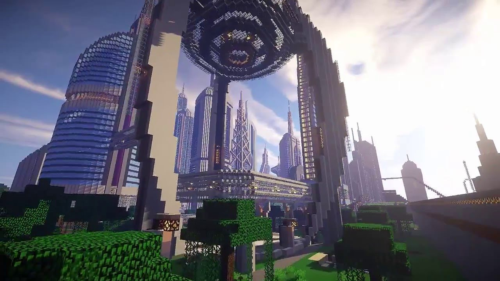
Recycle
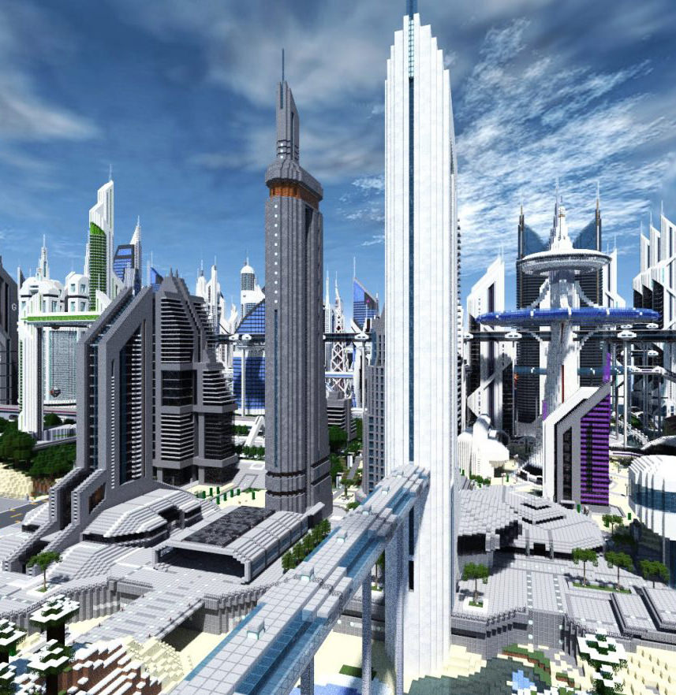
Urban planning
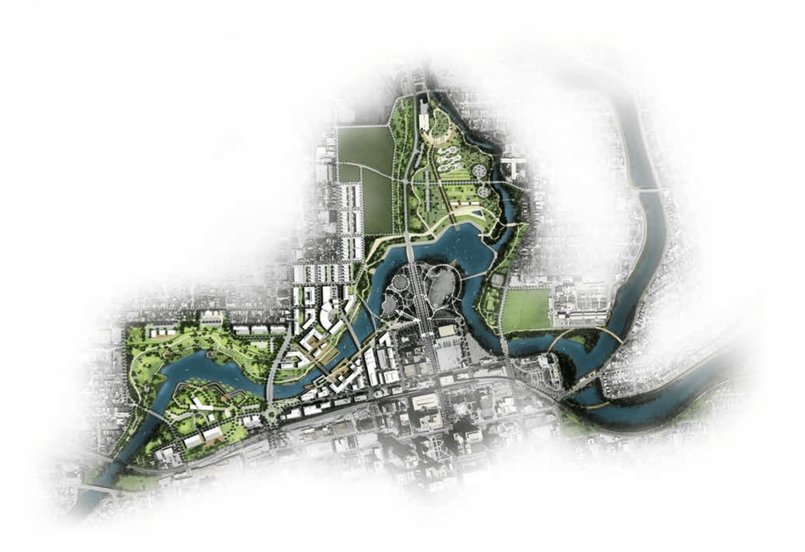
Urban planning
is a technical and political process concerned with the development and
design of land use and the built environment, including air, water, and
the infrastructure passing into and out of urban areas, such as
transportation, communications, and distribution networks. Urban
planning deals with physical layout of human settlements.
Eco transport
What's most exciting new technology for transportation? Well, there are
plenty of candidates! We’ve got the self-driving car and drones big
enough to carry people. Elon Musk is getting ready to bore hyperloop
tunnels. When it comes to moving humans around, the future looks to be
merging with sci-fi. But from where I stand, the most exciting form of
transportation technology is more than 100 years old—and it’s probably
sitting in your garage. It’s the bicycle. The future of
transportation has two thin wheels and handlebars.
Making bicycle our primary method of transport, will reduce carbon
emition, ensure the populations physical fitness, and reduce stress from
traffic. With a little bit of effort, we will all be healthier, happier
and prosper together.
Creating our own Energy
We aim to be 100% self-sufficient when it comes to
energy. Imagine homes whose very building material is salted with
dormant limestone-producing bacteria, which awaken upon contact with
moisture and repair any cracks or structural damage. There will be
“digestion tanks” full of anaerobic bacteria, to dispose of our waste;
and our homes will produce, store, and reuse their own energy, using
“microbial fuel cell stacks” and more efficient solar panels to
generate electricity, and power-banks like the Tesla powerwall to
store it against future use. Personal homes will be almost fully
independent of a dangerously overtaxed energy grid.
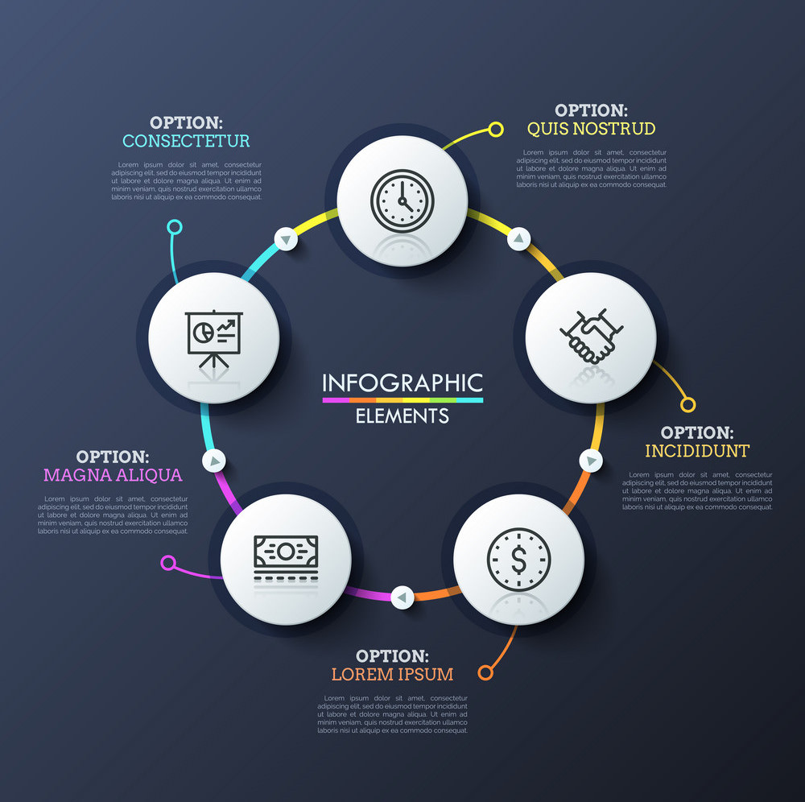
Solar Energy
A standard solar panel consists of a layer of silicon
cells, a metal frame, a glass casing and various wiring to allow current
to flow from the silicon cells. Silicon is a nonmetal with conductive
properties that allow it to absorb and convert sunlight into
electricity. When light interacts with a silicon cell, it causes
electrons to be set into motion, which initiates a flow of electric
current. This is known as the “photovoltaic effect,” and it describes
the general functionality of solar panel technology. We aim to provide
every house with solarpanels and are always searching to create newer
and better ones. The general photovoltaic process, as described above,
works through the following steps:
The silicon photovoltaic solar cell absorbs solar radiation
When the sun’s rays interact with the silicon cell, electrons begin to
move
Moving electrons creates a flow of electric current, captured by nodes
and wiring in the panel
Wires feed this direct current (DC) electricity to a solar inverter to
be converted to alternating current (AC) electricity
Our goal is to upscale the amount of energy solar panels can create. The
remainders of the energy will go to the main power gird, providing
bigger buildings and storing energy in the back-up generators.
Tidal Energy
The creation of tidal energy results from the movement
of ocean water associated with the rise and fall of tides. The first
tidal power plant was established in La Rance, France, and the largest
is in South Korea: the Sihwa Lake Tidal Power Station. Where we are
based, many waves hit the sea shore and they will provide us with clean
energy. Tidal stream generators are very similar to wind turbines except
their below the water surface instead of above or on land. The turbine
and generator converts the movement of water coming from change in tide,
the kinetic energy, into electricity. Water is 830 times denser than air
and therefore can generate electricity at lower speeds than wind
turbines. By downscaling this technology, we can apply this to any body
of water, gaining yet another source of green, free and renewable
energy.
Our department
We are a team of industrial professionals with a genuine passion for
technology and years of engineering experience. We are dedicated to
delivering ground-breaking solutions for new aerial exploration
through our market-leading quadcopter and camera drone technology.
Project Eden is headquartered in the United Kingdom. Explore our
camera drone and aerial photography systems online, and contact our
team today to talk more about smart drone technology and products!
Our ambition
We use sensor-based controls and computation to unlock the
capabilities of complex mechanisms. Our world-class development
teams take projects from initial concept to proof-of-principle
prototyping to build-test-build engineering, to field testing and
low-rate production. Building new technology to aid humans in every
field possible. Aiding all in their daily life activities.
Agras MG-1P series
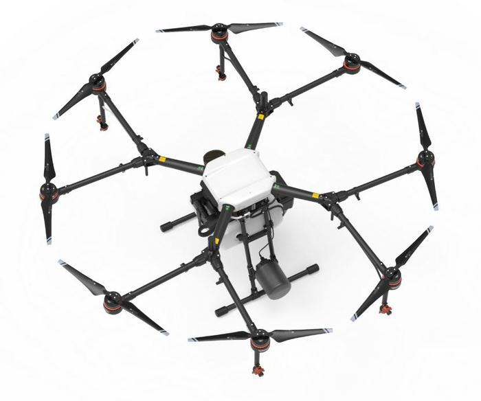
With 8 rotors, MG-1P Series Agriculture Drones employ advanced
propulsion and control algorithms to ensure flight safety even if one
arm breaks during flight. The drive system features a communication
mechanism that allows the system to reroute control signals during
operation.
A MG-1P controller can control up to 5 aircrafts simultaneously. This
new AI controller extends the control range to up to 3 km and supports
video transmission within that range, ensuring flight safety.
Spot
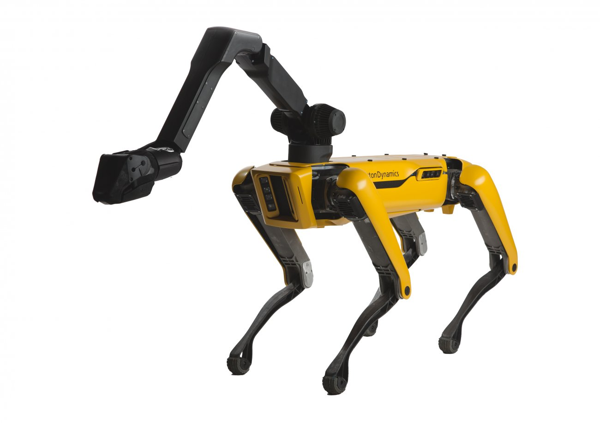
SpotMini is a small four-legged robot that comfortably fits in an
office or home. It weighs 25 kg (30 kg if you include the arm).
SpotMini is all-electric and can go for about 90 minutes on a charge,
depending on what it is doing. SpotMini is the quietest robot we have
built. We try to use as much AI as possible to reduce physical labour,
so our residents can enjoy the beauty of life to its fullest.